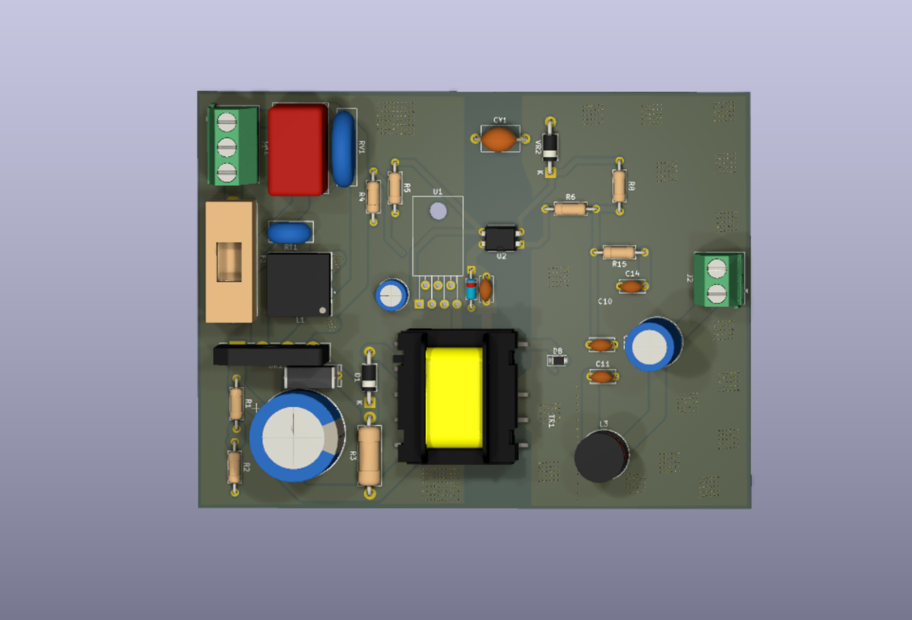
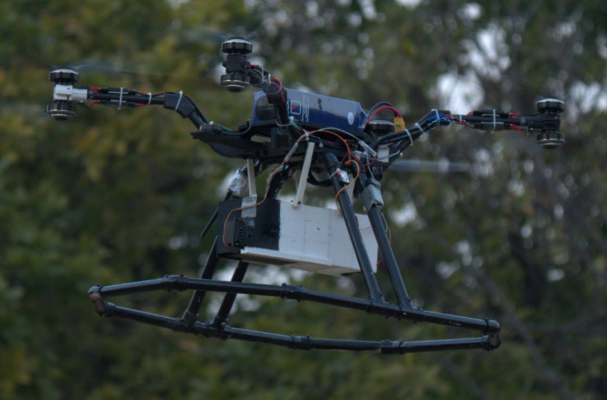
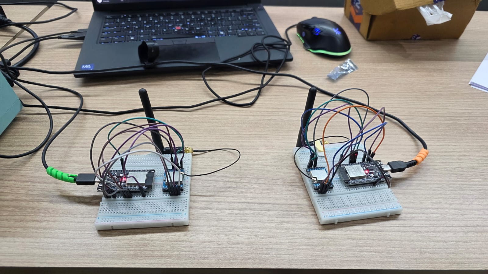
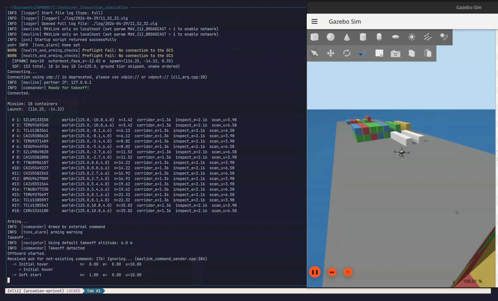
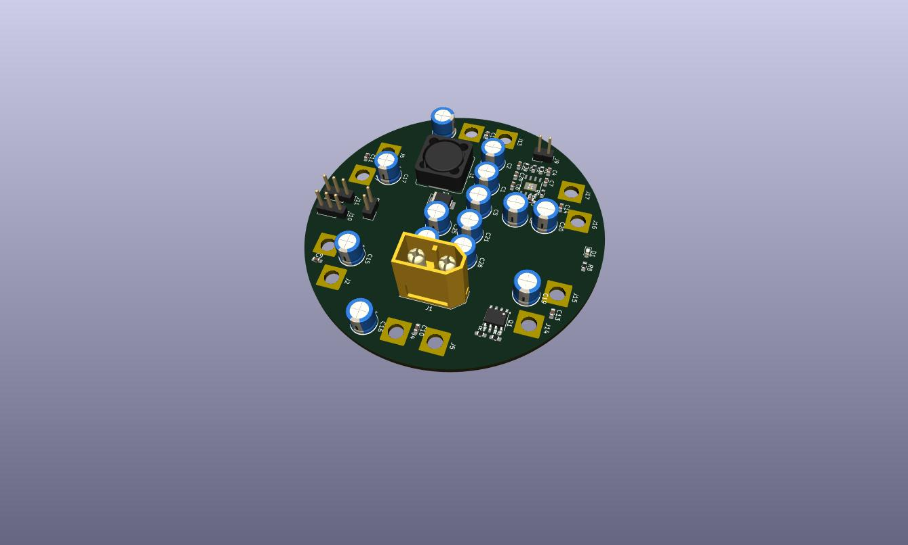
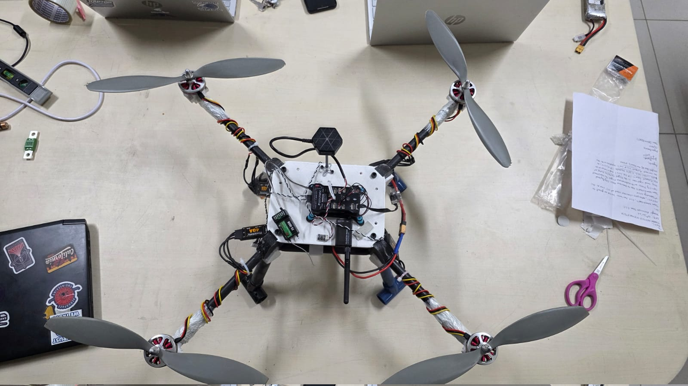

Work
Avionics, embedded systems, RF, and autonomy work across research, coursework, and freelance engagements.

Designed a 30W isolated AC-DC flyback power supply in KiCad 9 around the TOP244Y controller, converting universal 85–265 VAC mains input into regulated 12V/5V isolated DC outputs. Implemented EMI filtering, surge protection, a custom MYRRA 74030 transformer footprint, primary RCD and secondary RC snubber networks, and optocoupler-based isolated feedback. Delivered as a manufacturing-ready two-layer PCB with 4 kV reinforced isolation.

Designed, manufactured, and flight-tested a custom coaxial UAV with a 1000mm wheelbase, hybrid 3D-printed and carbon-fiber airframe, achieving 22 min endurance at 5 kg payload. Integrated Pixhawk + Raspberry Pi for autonomous survivor detection and payload delivery.

Built a frequency-hopping spread spectrum (FHSS) radio link from scratch using Ra-02 SX1278 LoRa modules and RadioLib on ESP32. Implemented a 16-channel LFSR-based pseudorandom hop sequence at 20 hops/sec, startup sync handshake, embedded periodic resync for long-term drift correction, and validated hop behavior on a HackRF One waterfall. Achieved zero packet loss at bench range with SF7/BW250 (~4800 bps effective throughput).

Full Upwork engagement for Tow-botic Systems: BAPLIE container parsing, Gazebo world generation, PX4 SITL wind sweep simulations, autonomous reefer inspection with MAVSDK-Python, and tethered drone redesign.

Designed a compact 75 mm power distribution board for a hexacopter UAV, featuring six 40 A ESC outputs, high-current power routing, and isolated regulated power rails for a Raspberry Pi, Pixhawk Mini, and dual servo actuators, with emphasis on power integrity, EMI mitigation, and reliable operation in autonomous flight systems.

Built a fast wide-area search quadcopter for disaster response, powered by 5010 360KV motors on 14-inch glass fiber propellers for extended range and payload-free speed. Carries an onboard Raspberry Pi with a camera module running real-time victim detection models, geotagging detected victims with GPS coordinates. Operates as the scouting half of a two-drone system, handing off precise coordinates to a companion heavy-payload drone for medkit and supply delivery to confirmed locations.
Developed a multi-drone autonomy platform featuring a mothership UAV and 10 deployable child drones. Implemented onboard perception, GPS-denied navigation, obstacle avoidance, and inter-UAV communication for coordinated autonomous operations.